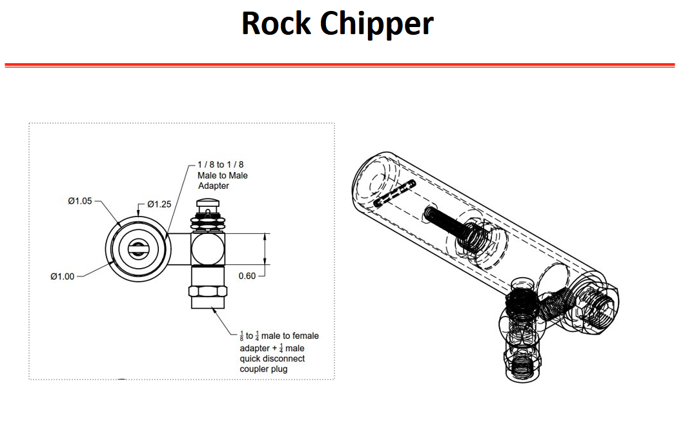
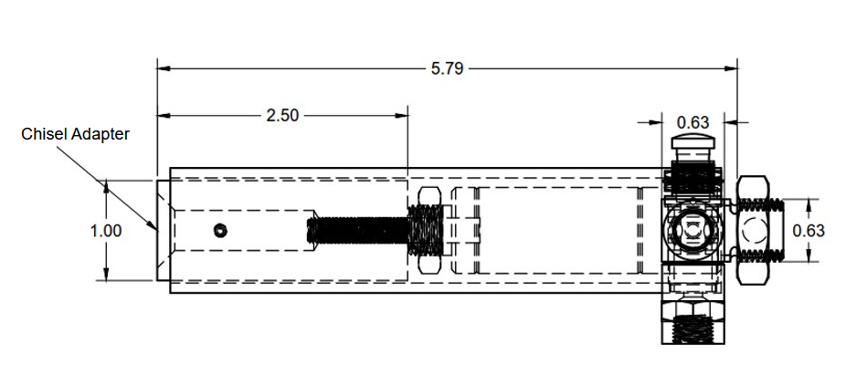
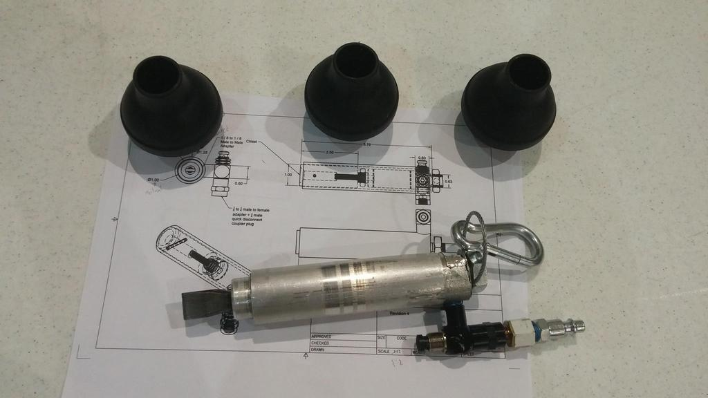

NASA Micro-G NeXT Competition
Full design, build and test of rock chipping tool that can operate in micro gravity and underwater.
Goal: Rock Chip Sampler that breaks of pieces of a rock (such as an asteroid) safely, without cross contamination between sites easily with astronaut gloves.
I was able to learn Fusion 360 to rebuild the tool from scratch with the parts that were available online from a manufacturer within a month of the on-site test at the
NASA Neutral Buoyancy Laboratory.
Rock chipping tool was neumatically powered and the button was designed to be comfortably pressed with a space suit glove.

Design was made to be modular for different chisel adapters.

Tool needed to have a tether point for safety. Containers were made for the operating tip to contain samples. Actuator is about 3/4 in. bore, 1/2 in. stroke, so the chisel doesn't extend too far.
One button press is one forward movement, does not repeatedly actuate if you hold down button, you have to press it for every strike.

Test was successful at chipping away at all rock test sights by underwater astronaut subject.